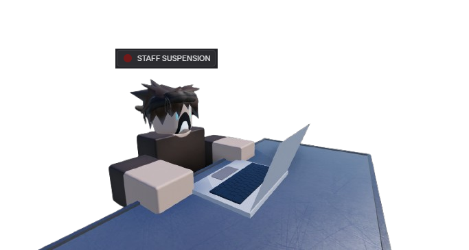

Welcome! This is the official Facility-03 "Black Dagger" Information Terminal
This website has been made to organise everything regarding lore and site information, so users don't have to
frantically search our Discord server for the correct channels that contain the information they desire to know.
The website may not have everything, but it has the most important things users may want to know. It is still
under heavy construction, so expect changes in the near future. As of now it looks simple and empty, but that
may soon change.
Happy browsing! coded by axilonis :D

News & Announcements
25/03/2025
10:39 UTC
Files have been uploaded to Github. The website is now being succesfully hosted using Github, and anyone can access it using the link.
20/03/2025
19:24 UTC
Development for this website has begun.
Guides
[SM] Session Moderator Guide
what the fuck do i write
About Us
General Information
Facility-03, codenamed "Black Dagger", is one of the most classified and well-guarded installations under the jurisdiction of the European Directive for Containment and Eradication (EDCE).
Unlike the Foundation, which focuses on indefinite containment, the EDCE operates under a doctrine of pragmatic security - indestructible Anomalies are to be contained, while all others are to be neutralized permanently.
Black Dagger was established in 2003 after a catastrophic breach at Facility-01 "Iron Bastion", which resulted in the loss of over 700 personnel and the complete destruction of the site. This event, known as "The Dresden Collapse," forced the EDCE to rethink its strategy: traditional containment was no longer enough. Instead, a specialized site was needed - one dedicated to the strategic eradication of Anomalies deemed too dangerous to exist.
While direct cooperation with the SCP Foundation is rare, there have been covert exchanges of information, particularly when the EDCE requires intel on high-priority Anomalies the Foundation refuses to terminate.
However, Black Dagger has also been responsible for several "extractions" - targeted operations where Anomalies held in Foundation custody were forcibly removed and sent for termination. The Foundation considers these acts highly illegal and provocative, leading to occasional skirmishes between Foundation Mobile Task Forces and EDCE operatives.
An infamous case was "Operation Eclipse" in 2016, where Black Dagger forces infiltrated Site-14 during a containment failure, triggered by EDCE moles and exfiltrated Anomaly-7382, a self-replicating organism the Foundation refused to terminate due to potential research value. The EDCE proceeded to obliterate all instances within 48 hours. While the Foundation attempted retaliation, diplomatic pressure from European governments forced them to stand down.
Map of all EDCE Facilities
EDCE-HQ: Located near Brussels, manages all Facilities
Facility-01: German-Polish Border, first site, rebuilt after the "Dresden Collapse"
Facility-02: Arctic Facility, contains high-risk anomalies
Facility-03: Austrian Alps, biggest site, contains most anomalies
Facility-04: Estonia, also serves as observation post monitoring Russia
Facility-05: Greece, naval base for the Mediterranean sea
Facility-06: Spain, naval base for the Atlantic ocean